One platform to track every cylinder from the warehouse to the customer, capture every sale, and know exactly who did what — across all your branches.
This platform closes all three — and proves it with data.
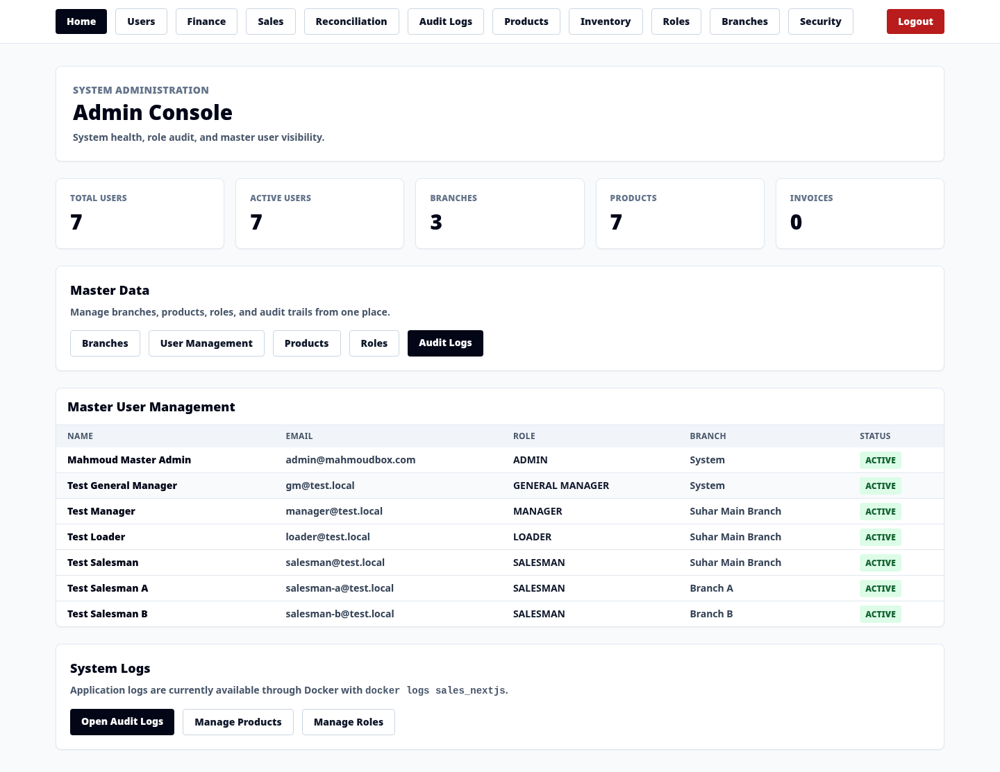
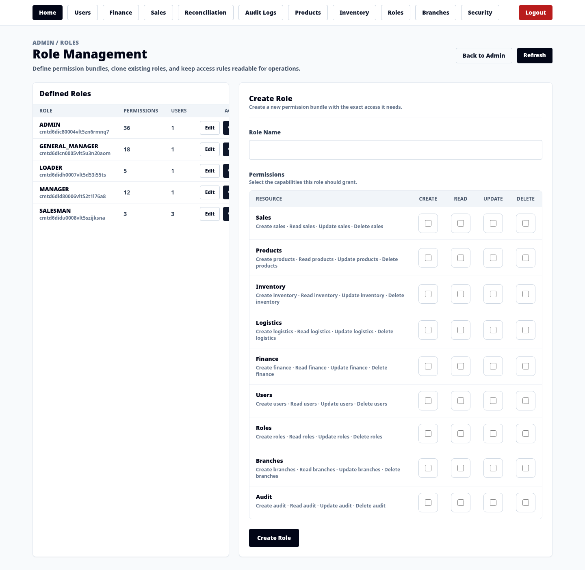
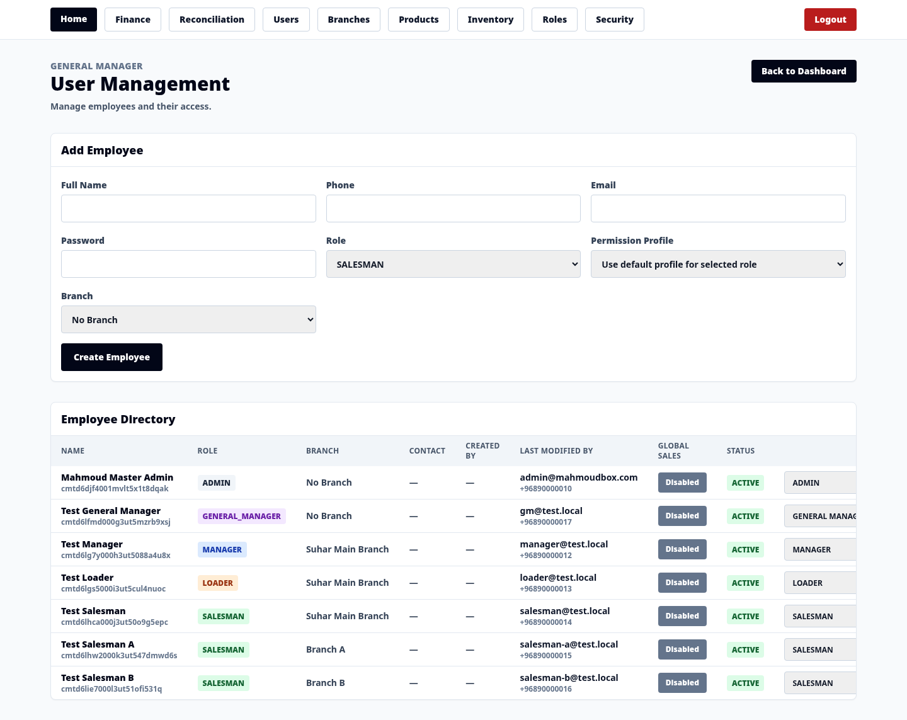
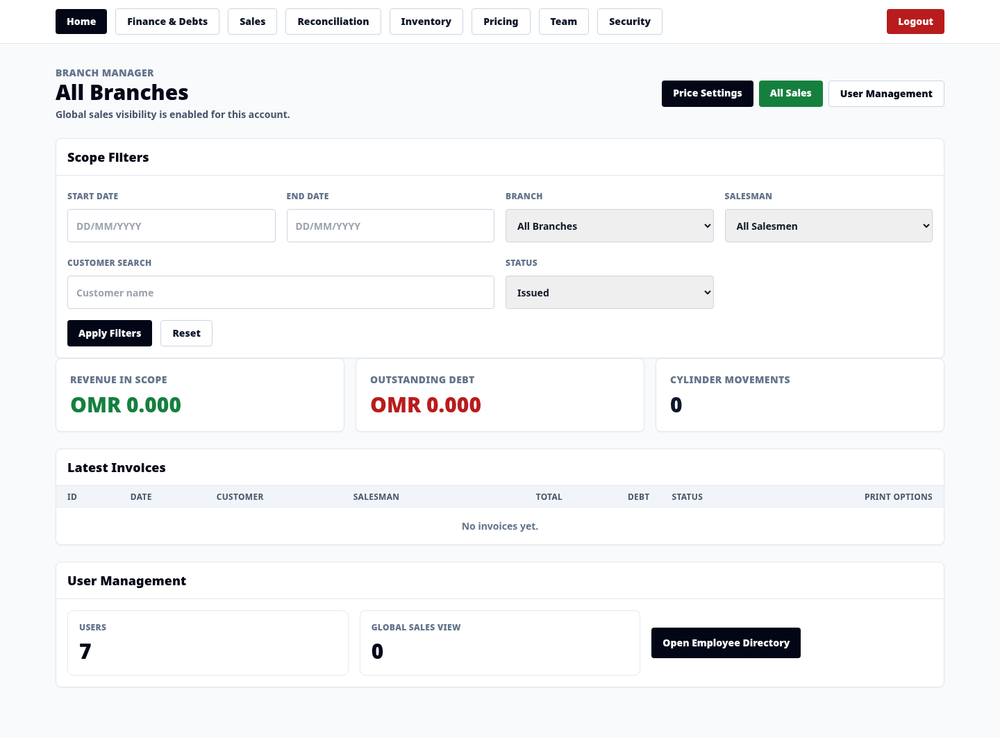
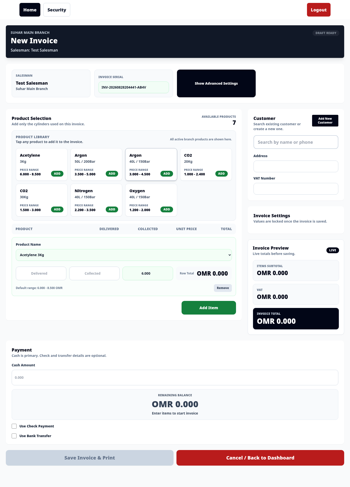
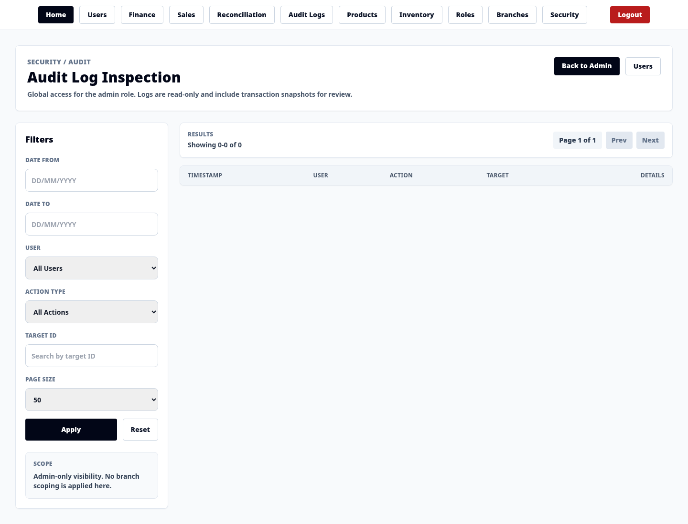
The same application, fully responsive — salesmen take orders and managers approve on their phones. No second app to build or maintain.
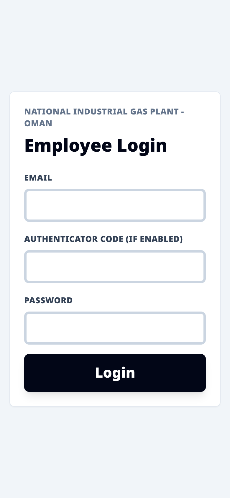
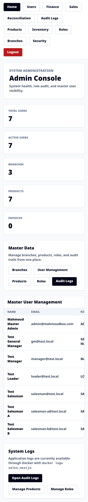
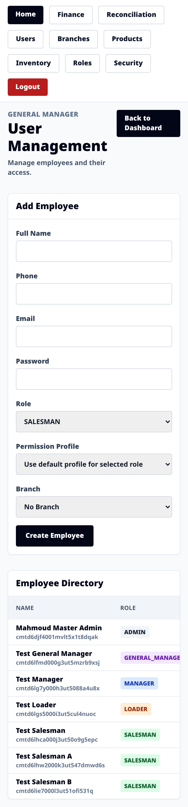
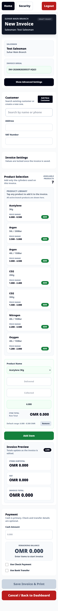
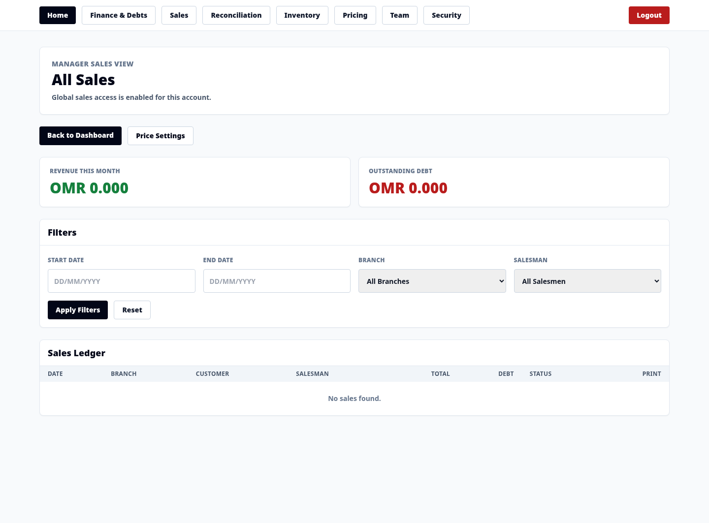
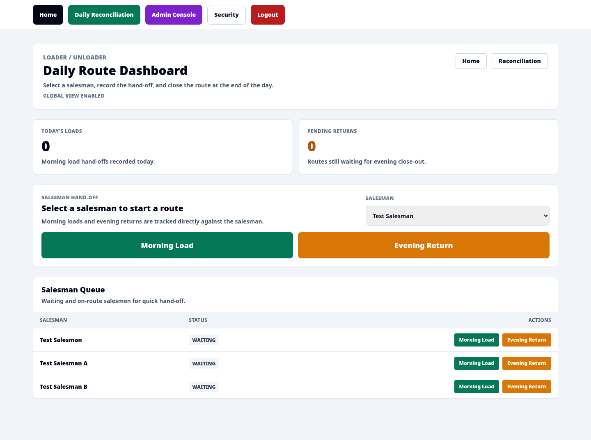
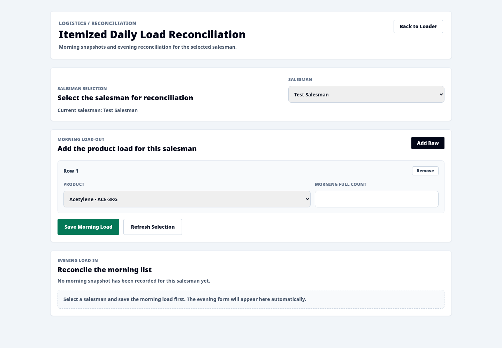
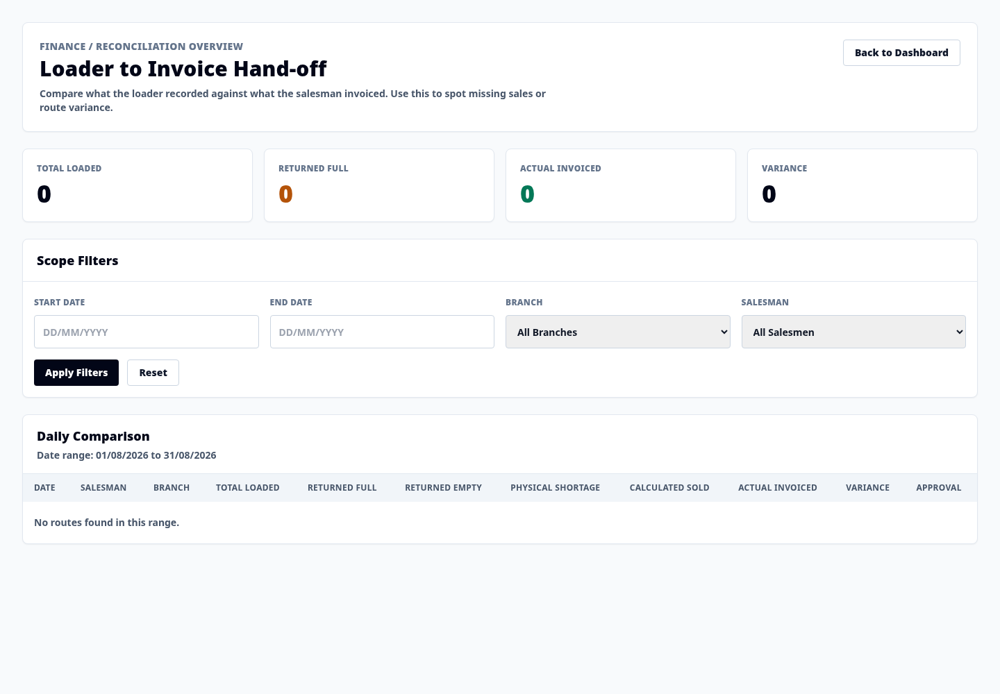
Next steps we recommend: automated tests on every update, a warehouse screen, bulk customer/product import, and exportable reports (reconciliation, debt aging, sales by cylinder).
National Industrial Gas Plant · Operations Platform